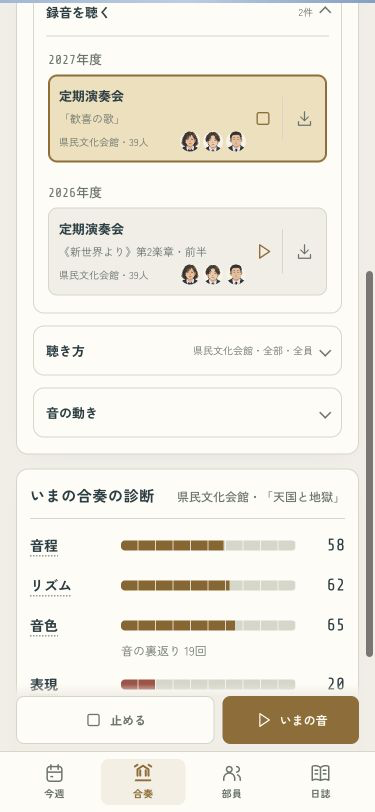
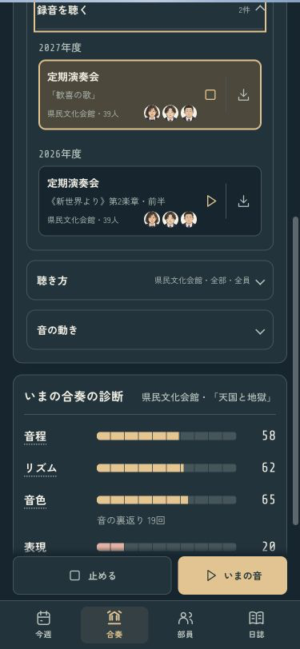
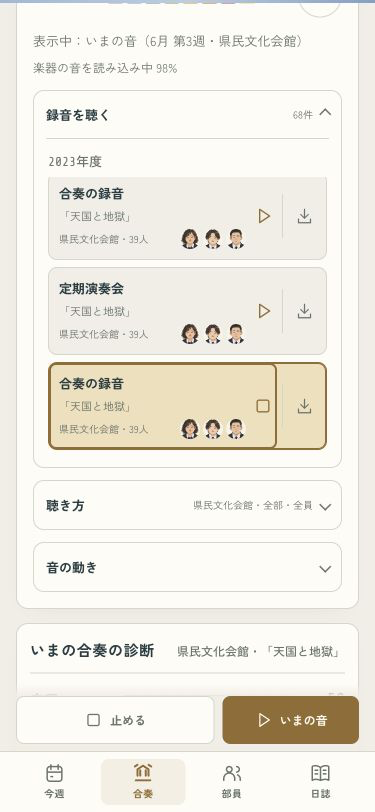
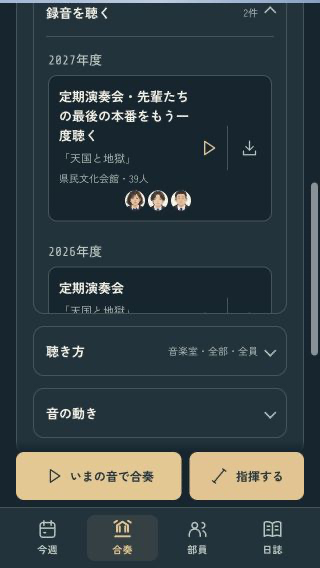
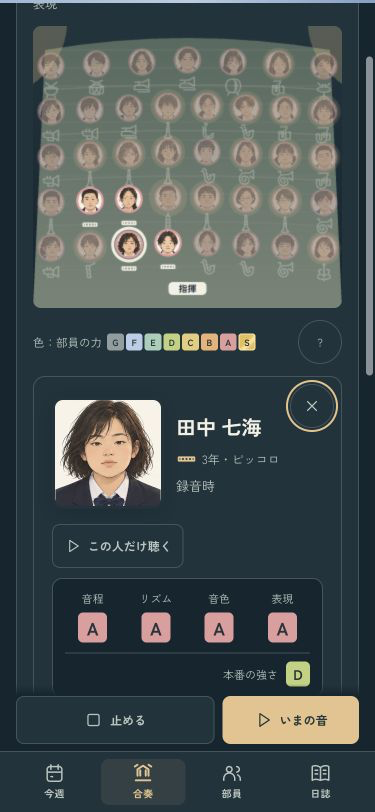

吹奏楽部のつくりかた · 合奏の改善
録音を、顔と曲で選ぶ。
あの年の部員と、あの曲をもう一度。年度ごとに並ぶ録音を押して聴き、画面下の「いまの音」で現在の部と聴き比べられます。
375px · ライト / 再生中は金の枠
375px · ダーク / 同じ操作
選ぶ・止めるは、その行から。
録音には曲・会場・当時の部員の顔を添えました。右端は保存。再生中の行をもう一度押すと止まります。同じ名前の録音も、それぞれ選べます。
何年分たまっても、一覧の高さを保つ
320px · 長い題名も横にはみ出さない
録音の中には、あのころの部員がいる
卒業・改名・席替え後も、昔の録音では当時の顔・名前・学年・席を表示。舞台の顔を押すと、その人の音も聴けます。

動作確認
375pxの4タブ・ライトとダーク、320px、読み込み待ち、同名の録音、1年の進行を確認。採点・成長・セーブ・録音の音は変更していません。iPhone用Releaseビルドは成功。実機は現在接続できないため、インストール確認は残っています。
確認ページは本物のセーブを書き換えません。録音の書き出し・共有自体は従来の処理を使い、今回のブラウザ確認では書き出し先の選択までを検証しています。